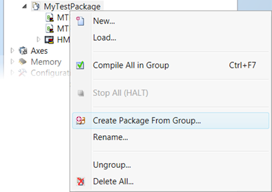
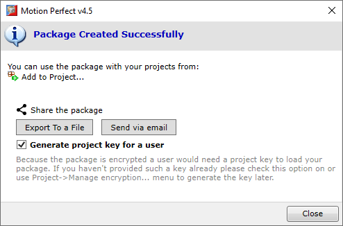

A package is developed within a project. The source of a package is a project group named after the package for which it is going to be source. It is advised that this project is kept as a dedicated “package development” project. Outside the project group for the package the project may contain other items, likely related to testing the package. It is good practice is to keep the package development project under a source control versioning system.
A package is created from the group’s context menu command “Create Package From Group...”.

This brings up the Package Creation Wizard which will guide the user through the package creation process.
The wizard has several pages:
|
Field |
Meaning |
|
Package name |
The name of the package. The package will be referred by this name. |
|
Package version |
The version of the package. If previous version is available it is displayed as a hint. See below for more detailed explanation. |
|
Package creator |
The package creator. May be the name of the developer responsible for the package release. |
|
Description |
Quick description of the package that will be displayed with the package name. |
|
Icon(32x32) |
Optional icon to be displayed with the package. The image will be re-scaled to size of 32 by 32 pixels. |
|
Help file |
A file that describes package functionality and interfacing. This file will be available for viewing in Motion Perfect. This should be the main source of help for the package. For example it should contain information about provided BASIC functions and/or HMI functionality (if any). |
Version must contain 2 to 4 numbers separated by dot and optionally followed by text suffix.
Version numbers can optionally have leading zeros to accommodate versioning scheme with fixed number of digits.
Examples:
1.2 - two version numbers
1.2.3 - three version numbers
1.2.3.4 (test) - four version numbers with suffix
1.002 - correct and same as 1.2
1.010 - correct and bigger than 1.002 as it resolves to 1.10 > 1.2
1.01 - not correct when using fixed number of digits versioning scheme as it has different number of digits and resolves to 1.1 < 1.2
|
Field |
Meaning |
|
Limit Controller Types |
If the package is applicable to certain controller types those can be specified. |
|
Require Minimum Firmware Version |
If the package is applicable above certain firmware version it can be specified. |
|
Display Order |
The positioning in the package list. This is purely for UI purposes. This can push this package higher in the list (in case of a long package list) |
|
Tags |
Tags to describe package in a way it should be treated by package list filtering. For example: “pendant, TrioMotion”, “math”, etc. |
|
Field |
Meaning |
|
Encrypting authority |
The name of the authority with which this package is associated. It works in conjunction with the password and generated project key to protect the package contents. The field is case-sensitive. |
|
Enter password |
A password used to protect the package. It should not be changed for this authority after it has been created. If in an exceptional case the password needs to be changed (for example: when compromised) this will mean all the Uniplay devices that use this package (when the package contains HMI content) will need to be loaded with a new licence file for this authority and the new password applied. Keep the password safe and secure in order to protect the intellectual property implemented in your package. |
|
Reenter password |
Password type error protection |
Package information check.
If the package contains HMI designs or HMI libraries then the HMI protection Options window is displayed. Refer to the HMI help page for the protected HMI content generation.
After the package has been created Motion Perfect provides an easy way to distribute your package.

Two sharing options are available: export the package to a local file and send it via email.
|
Option |
Meaning |
|
Export To a File |
Exports the package to a file. The latter can be imported on another system running Motion Perfect through the Package Manager or “Packages…” menu. See Add Package to a Project for details. |
|
Send Via Email |
Opens your default email client and prepares a new email with attached package file and some details. If selected so the mail will also contain a dedicated key to be used for package loading on the recipient’s system . |
|
Generate project key for a user |
When ON the project key generation routine will be started. This is needed at list once in order to provide the recipient (package user) with a key to enable loading the encrypted package content. Providing following versions of the same package may not require that option – assuming the user has stored his key already. |